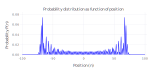
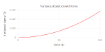

Quantum walk
This page is intended to serve as an introduction to “quantum walks”; more precisely, discrete-time quantum (random) walks. There are other versions such as the continuous-time quantum random walk, but this post does not cover such walks.
Discrete Quantum walk
The discrete quantum walk is described in the Schrondinger representation. We start with an “ideal” quantum walk, and introduce a model of noise later.
Ideal Hadamard Walk
To describe time evolution, consider a walker/particle on a one-dimensional lattice (line). Let the state of the walker at time \(t\) be: \[ \begin{equation} \label{eq:initial-state} \mid\! \psi(t)\rangle = \displaystyle \sum\limits_{n = -\infty}^{\infty}\sum\limits_{s=\downarrow}^{\uparrow} a_{n,s}(t)\mid\! n\rangle\mid\! s\rangle \end{equation} \]
The state vector \(\mid\! n\rangle\) (\(n = 0, \pm1, \pm2, \ldots\)) represents the spatial part of wavefunction at site \(n\), and \(\mid\! s\rangle\) (\(s\) can be \(L (\downarrow)\) or \(R (\uparrow)\)) is the spin (or coin or chiral) part. The complex coefficients \(a_{n,s}\) are probability amplitudes of the basis states \(\mid\! n\rangle \mid\! s\rangle\). The complex numbers \(a_{n,s}(t)\) are probability amplitudes, and hence obey: \(\sum \limits_{n = -\infty}^{\infty} \mid\! a_{n,s}(t)\!\mid^{2} = 1\). The coefficients \(a_{n,s}(t+1)\) at the next time step depends on the spin/chirality state at time \(t\). The time evolution of the quantum random walk is given by:
\[ \begin{equation} \label{eq:time-evolution} \mid\! \psi(t+1)\rangle = \hat{Q}\mid\! \psi(t)\rangle \end{equation} \]
The time evolution operator \(\hat{Q}\) is a product of two operators: \(\hat{Q} = \hat{T} \hat{U_{0}}\). The order of operation is from right to left, so the operator \(\hat{U_{0}}\) acts first, followed by \(\hat{T}\). Now, \(\hat{U_{0}} = \hat{I} \otimes \hat{w_{0}}\) is an operator which acts only on the chiral(spin) state space(by \(\hat{w_{0}}\)) and leaves the position state unchanged (by acting with the identity operator, \(\hat{I}\)). In the next step, the translation operator \(\hat{T}\) acts on the position space (moving the particle one step), leaving the coin state unchanged.
For conservation of probability, \(\hat{w_{0}}\) is require to be a unitary. There are several possible choices unitary operators, of which the “Hadamard” operator is well known, and we consider the standard “Hadamard” walk, where the Hadamard operator acts on the chiral (coin) state. The choice of the Hadamard matrix as the coin operator is not unique. There are other possible coin operators such as the Grover coin opeator which are not considered here. The action of the Hadamard operator can be represented as:
\[ \begin{equation} \label{eq:hadamard-op} \begin{aligned} \hat{w_{0}}\mid\! \uparrow\rangle = \dfrac{\mid\! \uparrow\rangle + \mid\! \downarrow\rangle}{\sqrt{2}} \\ \hat{w_{0}}\mid\! \downarrow\rangle = \dfrac{\mid\! \uparrow\rangle - \mid\! \downarrow\rangle}{\sqrt{2}} \end{aligned} \end{equation} \]
i.e., the Hadamard operator acting on a pure spin state sends them into one of two mutually orthogonal states (new-basis) in which the probabilities of \(\mid\!\uparrow\rangle\) and \(\mid\!\downarrow\rangle\) are equal. The initial basis states of the 2-level coin state can be represented as a 2-level spin system in which
\[ \begin{equation}\label{eq:spin-basis} \mid\! R\rangle = \mid\! \uparrow\rangle \equiv \left[ \! \begin{array}{c} 1 \\ 0\\ \end{array} \!\right] \mbox{ and } \mid\! L\rangle = \mid\! \downarrow\rangle \equiv \left[ \! \begin{array}{c} 0 \\ 1\\ \end{array} \!\right] \end{equation} \]
The Hadamard operator which converts these basis states into two (orthogonal) equal-superposition new basis states can be represented as a \(2 \times 2\) unitary matrix in the computational basis as: \[ \begin{equation} \hat{w_{0}} = \dfrac{1}{\sqrt{2}} \left[ \!\begin{array}{cc} 1 & 1 \\ 1 & -1 \\ \end{array} \!\right] \end{equation} \]
After acting with \(\hat{U_{0}}\), the translation operator \(\hat{T}\) on the left acts on the position part of the state, moving the position of the particle one step to the left or right depending on whether the chirality is \(\downarrow\) or \(\uparrow\) respectively. \[ \begin{equation}\label{eq:translation-op} \begin{aligned} \hat{T}\mid\! n\rangle \mid\! \uparrow\rangle = \mid\! n+1\rangle \mid\! \uparrow\rangle \\ \hat{T}\mid\! n\rangle \mid\! \downarrow\rangle = \mid\! n-1\rangle \mid\! \downarrow\rangle \end{aligned} \end{equation} \]
To see the time-evolution operator in action, start with the initial state specified in equation and the time evolution as considered in equation . \[ \mid\!\Psi(t+1)\rangle = \hat{T}\hat{U_{0}} \mid\! \Psi(t)\rangle = \displaystyle \sum\limits_{n = -\infty}^{\infty} \hat{T}\hat{U_{0}} a_{n,\uparrow}(t) \mid\! n\rangle \mid\!\uparrow\rangle + \displaystyle \sum\limits_{n = -\infty}^{\infty} \hat{T}\hat{U_{0}} a_{n,\downarrow}(t) \mid\! n\rangle \mid\!\downarrow\rangle \]
which, according to the action of Hadamard and time evolutions operators described in equations \(\eqref{eq:hadamard-op}\) and \(\eqref{eq:translation-op}\) respectively, \[ \begin{align} \mid\!\Psi(t+1)\rangle = \hat{Q}\mid\! \Psi(t)\rangle = \displaystyle \sum\limits_{n = -\infty}^{\infty} \dfrac{a_{n,\uparrow}(t)}{\sqrt{2}} \left( \mid\! n+1\rangle \mid\!\uparrow\rangle + \mid\! n-1\rangle \mid\!\downarrow\rangle \right) + \displaystyle \sum\limits_{n = -\infty}^{\infty} \dfrac{a_{n,\downarrow}(t)}{\sqrt{2}} \left( \mid\! n+1\rangle \mid\!\uparrow\rangle - \mid\! n-1\rangle \mid\!\downarrow\rangle \right) \\ = \displaystyle \sum\limits_{n = -\infty}^{\infty} \left\lbrace \left( \dfrac{ a_{n,\uparrow}(t) + a_{n,\downarrow}(t) }{\sqrt{2}} \right) \mid\! n+1\rangle \mid\!\uparrow\rangle + \left( \dfrac{ a_{n,\uparrow}(t) - a_{n,\downarrow}(t) }{\sqrt{2}} \right) \mid\! n-1\rangle \mid\!\uparrow\rangle \right\rbrace \end{align} \]
Collect the terms with identical kets and further simplification gives: \[ \begin{equation} \mid\!\Psi(t+1)\rangle = \displaystyle \sum\limits_{n = -\infty}^{\infty} \left\lbrace \left( \dfrac{ a_{n,\uparrow}(t) + a_{n,\downarrow}(t) }{\sqrt{2}} \right) \mid\! n+1\rangle \mid\!\uparrow\rangle + \left( \dfrac{ a_{n,\uparrow}(t) - a_{n,\downarrow}(t) }{\sqrt{2}} \right) \mid\! n-1\rangle \mid\!\uparrow\rangle \right\rbrace \end{equation} \]
Comparing it to the standard form the state vector at time \((t+1)\) as described in equation , the relation between the coefficients \(a_{n,s}\) at different time instants form a set of recursive equations:
\[ \begin{eqnarray} \label{eq:ideal-coeff} a_{n,\uparrow}(t+1) = \dfrac{1}{\sqrt{2}}[a_{n-1,\uparrow}(t) + a_{n-1,\downarrow}(t)] \\ a_{n,\downarrow}(t+1) = \dfrac{1}{\sqrt{2}}[a_{n+1,\uparrow}(t) - a_{n+1,\downarrow}(t)] \end{eqnarray} \]
which can be solved by using appropriate initial conditions. Here, we assume the walker starts at the origin (\(n = 0\)). The chirality of the walker could be any state, say, \(\mid\uparrow\rangle\) or \(\mid\downarrow\rangle\) or any known superposition of \(\mid\uparrow\rangle\) and \(\mid\downarrow\rangle\). From the knowlege of the initial state, the coefficients \(a_{n,s}(t)\) at any finite time \(t\) can be calculated and the state of the walker at any time is known.
Quantities of Interest
The quantity that characterizes the quantum walk is the probability distribution of the walker i.e. the probability of finding the walker at position \(n\) at time \(t\), denoted by \(P_{t}(n)\), where \(P_{t}(n) = \mid a_{n, \uparrow}\mid^{2} + \mid a_{n, \downarrow}\mid^{2}\). Given the position space probability distribution \(P_{t}(n)\), the standard deviation \(\sigma(t)\) (or the variance \(\sigma^{2}(t)\)) of the position can be calculated as:
\[\sigma^{2}(t) \equiv \overline{\langle n^{2}(t) \rangle} - \overline{\langle n(t) \rangle}^{2} \]
where \(\langle n \rangle\) and \(\langle n^{2} \rangle\) are defined by: \[ \begin{eqnarray} \overline{\langle n^{2}(t) \rangle} = \displaystyle \sum\limits_{n = -t}^{t} n^{2} \langle P_{t}(n)\rangle \\ \overline{\langle n(t) \rangle} = \displaystyle \sum\limits_{n = -t}^{t} n \langle P_{t}(n)\rangle \end{eqnarray} \]
As an example, we let the particle start at the origin (\(n = 0\)), and let the chiral part of the wavefunction start in an equal superposition of \(\mid\! \uparrow\rangle\) and \(\mid\! \downarrow\rangle\); in this case, \(s = \frac{1}{sqrt{2}}(\mid\! \uparrow\rangle + i \mid\! \downarrow\rangle)\). The probability distribution of the resulting quantum walk on the line is shown in Figure 1: 
Compare this plot with the simplest 1-D classical random walk which appromixates Brownian motion where the probability distributon is a Gaussian. For the classical random walk, the standard deviation of the position, \(\sigma(t)\) goes as \(\sqrt(t)\), i.e. \(\sigma(t) \propto \sqrt{t}\) or \(\sigma^{2}(t) \propto (t)\). In contrast, for the quantum walk, \(\sigma(t) \propto (t)\) or \(\sigma^{2}(t) \propto t^{2}\), as shown in Figure 2: 
In the next part, we allow noise in the coin operator, and check the case when the coin operator can be represented by unitary operators more general than the Hadamard matrix.
Note: If you can’t see the equations, please wait for a few seconds and check your internet connection. This site uses the cloud version of MathJax, and it may take time to render on slow connetions. If you still see errors in rendering, please let me know.